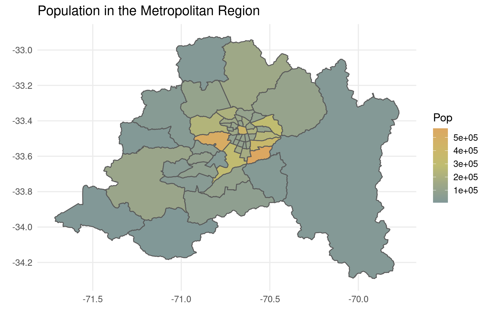
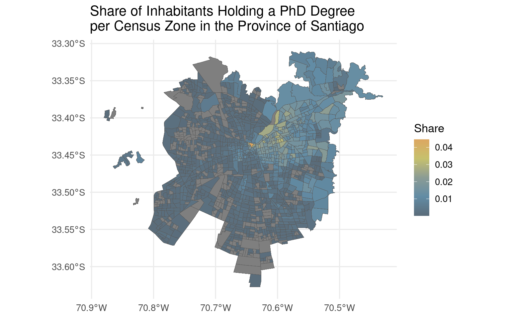
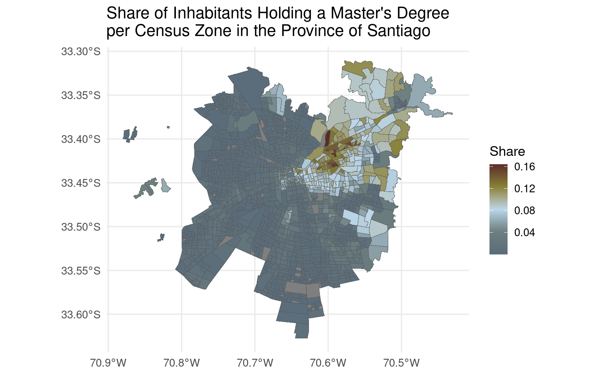
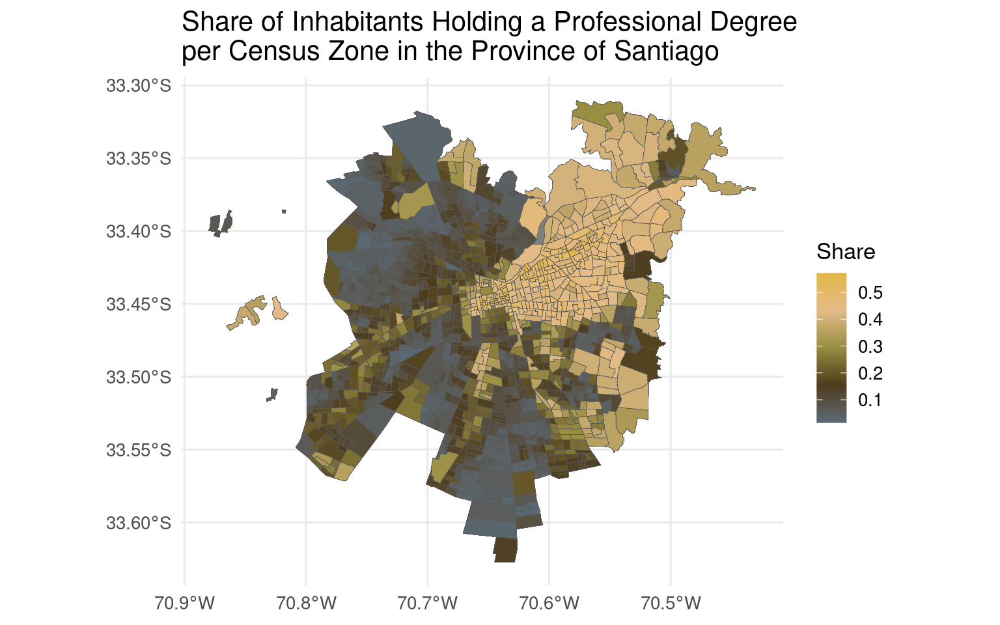

About

Publicly accessible databases often impose query limits or require registration. Even when I maintain public and limit-free APIs, I never wanted to host a public database because I tend to think that the connection strings are a problem for the user.
I’ve decided to host different light/medium size by using PostgreSQL, MySQL and SQL Server backends (in strict descending order of preference!).
Why 3 database backends? I think there are a ton of small edge cases when moving between DB back ends and so testing lots with live databases is quite valuable. With this resource you can benchmark speed, compression, and DDL types.
Please send me a tweet if you need the connection strings for your lectures or workshops. My Twitter username is @pachamaltese. See the SQL dumps on each section to have the data locally.
NYCflights13
A database that contains airline on-time data for all flights departing NYC in 2013. Also includes useful ‘metadata’ on airlines, airports, weather, and planes.
This database is used in R4DS and I have a blog post with the steps to create it in PostgreSQL and even a diagram of the database schema.
Check the structure of the tables in the next preview.
library(dplyr)
library(RPostgres)
con <- dbConnect(
Postgres(),
user = Sys.getenv("dbedu_usr"),
password = Sys.getenv("dbedu_pwd"),
dbname = "nycflights13",
host = "databases.pacha.dev"
)
tbl(con, "airlines") %>% glimpse()## Rows: ??
## Columns: 2
## Database: postgres [student@databases.pacha.dev:5432/nycflights13]
## $ carrier <chr> "9E", "AA", "AS", "B6", "DL", "EV", "F9", "FL", "HA", "MQ", "…
## $ name <chr> "Endeavor Air Inc.", "American Airlines Inc.", "Alaska Airlin…## Rows: ??
## Columns: 8
## Database: postgres [student@databases.pacha.dev:5432/nycflights13]
## $ faa <chr> "04G", "06A", "06C", "06N", "09J", "0A9", "0G6", "0G7", "0P2", …
## $ name <chr> "Lansdowne Airport", "Moton Field Municipal Airport", "Schaumbu…
## $ lat <dbl> 41.13047, 32.46057, 41.98934, 41.43191, 31.07447, 36.37122, 41.…
## $ lon <dbl> -80.61958, -85.68003, -88.10124, -74.39156, -81.42778, -82.1734…
## $ alt <dbl> 1044, 264, 801, 523, 11, 1593, 730, 492, 1000, 108, 409, 875, 1…
## $ tz <dbl> -5, -6, -6, -5, -5, -5, -5, -5, -5, -8, -5, -6, -5, -5, -5, -5,…
## $ dst <chr> "A", "A", "A", "A", "A", "A", "A", "A", "U", "A", "A", "U", "A"…
## $ tzone <chr> "America/New_York", "America/Chicago", "America/Chicago", "Amer…## Rows: ??
## Columns: 19
## Database: postgres [student@databases.pacha.dev:5432/nycflights13]
## $ year <int> 2013, 2013, 2013, 2013, 2013, 2013, 2013, 2013, 2013, …
## $ month <int> 1, 1, 1, 1, 1, 1, 1, 1, 1, 1, 1, 1, 1, 1, 1, 1, 1, 1, …
## $ day <int> 1, 1, 1, 1, 1, 1, 1, 1, 1, 1, 1, 1, 1, 1, 1, 1, 1, 1, …
## $ dep_time <int> 517, 533, 542, 544, 554, 554, 555, 557, 557, 558, 558,…
## $ sched_dep_time <int> 515, 529, 540, 545, 600, 558, 600, 600, 600, 600, 600,…
## $ dep_delay <dbl> 2, 4, 2, -1, -6, -4, -5, -3, -3, -2, -2, -2, -2, -2, -…
## $ arr_time <int> 830, 850, 923, 1004, 812, 740, 913, 709, 838, 753, 849…
## $ sched_arr_time <int> 819, 830, 850, 1022, 837, 728, 854, 723, 846, 745, 851…
## $ arr_delay <dbl> 11, 20, 33, -18, -25, 12, 19, -14, -8, 8, -2, -3, 7, -…
## $ carrier <chr> "UA", "UA", "AA", "B6", "DL", "UA", "B6", "EV", "B6", …
## $ flight <int> 1545, 1714, 1141, 725, 461, 1696, 507, 5708, 79, 301, …
## $ tailnum <chr> "N14228", "N24211", "N619AA", "N804JB", "N668DN", "N39…
## $ origin <chr> "EWR", "LGA", "JFK", "JFK", "LGA", "EWR", "EWR", "LGA"…
## $ dest <chr> "IAH", "IAH", "MIA", "BQN", "ATL", "ORD", "FLL", "IAD"…
## $ air_time <dbl> 227, 227, 160, 183, 116, 150, 158, 53, 140, 138, 149, …
## $ distance <dbl> 1400, 1416, 1089, 1576, 762, 719, 1065, 229, 944, 733,…
## $ hour <dbl> 5, 5, 5, 5, 6, 5, 6, 6, 6, 6, 6, 6, 6, 6, 6, 5, 6, 6, …
## $ minute <dbl> 15, 29, 40, 45, 0, 58, 0, 0, 0, 0, 0, 0, 0, 0, 0, 59, …
## $ time_hour <dttm> 2013-01-01 10:00:00, 2013-01-01 10:00:00, 2013-01-01 …## Rows: ??
## Columns: 9
## Database: postgres [student@databases.pacha.dev:5432/nycflights13]
## $ tailnum <chr> "N10156", "N102UW", "N103US", "N104UW", "N10575", "N105U…
## $ year <int> 2004, 1998, 1999, 1999, 2002, 1999, 1999, 1999, 1999, 19…
## $ type <chr> "Fixed wing multi engine", "Fixed wing multi engine", "F…
## $ manufacturer <chr> "EMBRAER", "AIRBUS INDUSTRIE", "AIRBUS INDUSTRIE", "AIRB…
## $ model <chr> "EMB-145XR", "A320-214", "A320-214", "A320-214", "EMB-14…
## $ engines <int> 2, 2, 2, 2, 2, 2, 2, 2, 2, 2, 2, 2, 2, 2, 2, 2, 2, 2, 2,…
## $ seats <int> 55, 182, 182, 182, 55, 182, 182, 182, 182, 182, 55, 55, …
## $ speed <int> NA, NA, NA, NA, NA, NA, NA, NA, NA, NA, NA, NA, NA, NA, …
## $ engine <chr> "Turbo-fan", "Turbo-fan", "Turbo-fan", "Turbo-fan", "Tur…## Rows: ??
## Columns: 15
## Database: postgres [student@databases.pacha.dev:5432/nycflights13]
## $ origin <chr> "EWR", "EWR", "EWR", "EWR", "EWR", "EWR", "EWR", "EWR", "E…
## $ year <int> 2013, 2013, 2013, 2013, 2013, 2013, 2013, 2013, 2013, 2013…
## $ month <int> 1, 1, 1, 1, 1, 1, 1, 1, 1, 1, 1, 1, 1, 1, 1, 1, 1, 1, 1, 1…
## $ day <int> 1, 1, 1, 1, 1, 1, 1, 1, 1, 1, 1, 1, 1, 1, 1, 1, 1, 1, 1, 1…
## $ hour <int> 1, 2, 3, 4, 5, 6, 7, 8, 9, 10, 11, 13, 14, 15, 16, 17, 18,…
## $ temp <dbl> 39.02, 39.02, 39.02, 39.92, 39.02, 37.94, 39.02, 39.92, 39…
## $ dewp <dbl> 26.06, 26.96, 28.04, 28.04, 28.04, 28.04, 28.04, 28.04, 28…
## $ humid <dbl> 59.37, 61.63, 64.43, 62.21, 64.43, 67.21, 64.43, 62.21, 62…
## $ wind_dir <dbl> 270, 250, 240, 250, 260, 240, 240, 250, 260, 260, 260, 330…
## $ wind_speed <dbl> 10.35702, 8.05546, 11.50780, 12.65858, 12.65858, 11.50780,…
## $ wind_gust <dbl> NA, NA, NA, NA, NA, NA, NA, NA, NA, NA, NA, NA, NA, NA, 20…
## $ precip <dbl> 0, 0, 0, 0, 0, 0, 0, 0, 0, 0, 0, 0, 0, 0, 0, 0, 0, 0, 0, 0…
## $ pressure <dbl> 1012.0, 1012.3, 1012.5, 1012.2, 1011.9, 1012.4, 1012.2, 10…
## $ visib <dbl> 10, 10, 10, 10, 10, 10, 10, 10, 10, 10, 10, 10, 10, 10, 10…
## $ time_hour <dttm> 2013-01-01 06:00:00, 2013-01-01 07:00:00, 2013-01-01 08:0…Intendo database
It’s a dummy database that we used at the My Organization’s First R Package and contains managerial information of a company called Intendo, which creates mobile games. The tables contain information for the 2015 year for all sorts of information for their only game: Super Jetroid.
This database can be helpful for workshops and showing how to create an R package focused on the particular needs of an organization, including easier data access, shared functions for data transformation and analysis, and a common look and feel for reporting.
Check the structure of the tables in the next preview.
library(dplyr)
library(RPostgres)
con <- dbConnect(
Postgres(),
user = Sys.getenv("dbedu_usr"),
password = Sys.getenv("dbedu_pwd"),
dbname = "intendo",
host = "databases.pacha.dev"
)
tbl(con, "daily_users") %>% glimpse()## Rows: ??
## Columns: 14
## Database: postgres [student@databases.pacha.dev:5432/intendo]
## $ user_id <chr> "BRLHQDSZVTAC", "RKPXJCSWQLHU", "RKPXJCSWQLHU", "UYHDS…
## $ session_id <chr> "BRLHQ_gshwbcji", "RKPXJ_gshwbcji", "RKPXJ_gshwbcji", …
## $ time <chr> "2015-01-01 08:35:11", "2015-01-01 08:35:11", "2015-01…
## $ total_sessions <dbl> 1, 1, 2, 1, 2, 1, 1, 1, 1, 1, 1, 2, 1, 1, 2, 1, 2, 1, …
## $ total_time <dbl> 14.0, 8.8, 19.0, 17.0, 37.4, 11.4, 31.2, 33.8, 21.4, 3…
## $ level_reached <dbl> 3, 2, 4, 4, 9, 2, 7, 8, 5, 9, 5, 6, 2, 1, 6, 2, 5, 0, …
## $ at_eoc <int> 0, 0, 0, 0, 0, 0, 0, 0, 0, 0, 0, 0, 0, 0, 0, 0, 0, 0, …
## $ in_ftue <int> 0, 0, 0, 0, 0, 0, 0, 0, 0, 0, 0, 0, 0, 0, 0, 0, 0, 1, …
## $ is_customer <int> 0, 0, 0, 0, 0, 0, 1, 1, 1, 0, 0, 0, 0, 0, 0, 1, 1, 0, …
## $ iap_revenue <dbl> 0.0000, 0.0000, 0.0000, 0.0000, 0.0000, 0.0000, 3.8423…
## $ ad_revenue <dbl> 0.158, 0.790, 1.720, 0.441, 0.994, 0.130, 0.000, 0.000…
## $ total_revenue <dbl> 0.1580, 0.7900, 1.7200, 0.4410, 0.9940, 0.1300, 3.8423…
## $ iap_count <dbl> 0, 0, 0, 0, 0, 0, 1, 1, 1, 0, 0, 0, 0, 0, 0, 1, 2, 0, …
## $ ad_count <dbl> 1, 1, 2, 1, 2, 1, 0, 0, 0, 1, 1, 2, 1, 1, 2, 0, 0, 1, …## Rows: ??
## Columns: 8
## Database: postgres [student@databases.pacha.dev:5432/intendo]
## $ user_id <chr> "BRLHQDSZVTAC", "RKPXJCSWQLHU", "RKPXJCSWQLHU", "UYHDSPZNX…
## $ session_id <chr> "BRLHQ_gshwbcji", "RKPXJ_gshwbcji", "RKPXJ_gshwbcji", "UYH…
## $ time <chr> "2015-01-01 08:35:11", "2015-01-01 08:35:11", "2015-01-01 …
## $ name <chr> "ad_5sec", "ad_5sec", "ad_5sec", "ad_5sec", "ad_5sec", "ad…
## $ size <chr> NA, NA, NA, NA, NA, NA, "3", "5", "1", NA, NA, NA, NA, NA,…
## $ type <chr> "ad", "ad", "ad", "ad", "ad", "ad", "currency", "currency"…
## $ price <dbl> NA, NA, NA, NA, NA, NA, 4.99, 129.99, 4.99, NA, NA, NA, NA…
## $ revenue <dbl> 0.1580, 0.7900, 0.9300, 0.4410, 0.5530, 0.1300, 3.8423, 90…## Rows: ??
## Columns: 14
## Database: postgres [student@databases.pacha.dev:5432/intendo]
## $ user_id <chr> "XSHKGMBPQRZD", "AMNISXVRODLU", "XLKACJEWUTQO", "ZFSQIJ…
## $ first_login <chr> "2015-02-14 19:56:57", "2015-08-11 15:56:47", "2015-02-…
## $ iap_count <dbl> 1, 2, 1, 4, 3, NA, NA, NA, NA, 2, NA, NA, 2, 1, 1, 3, N…
## $ iap_revenue <dbl> 0.93, 0.13, 0.00, 1.06, 0.00, 0.42, 1.06, 1.06, 0.39, 0…
## $ ad_count <dbl> 1, 1, NA, 2, NA, 2, 2, 2, 3, NA, 4, 1, NA, 1, 2, 2, 1, …
## $ ad_revenue <dbl> 0.93, 0.13, NA, 1.06, NA, 0.42, 1.06, 1.06, 0.39, NA, 1…
## $ total_revenue <dbl> 1.86, 0.26, NA, 2.12, NA, 0.84, 2.12, 2.12, 0.78, NA, 3…
## $ customer <int> 1, 1, 1, 1, 1, 0, 0, 0, 0, 1, 0, 0, 1, 1, 1, 1, 0, 1, 0…
## $ subscriber <int> 0, 0, 0, 0, 0, 0, 0, 0, 0, 0, 0, 0, 0, 0, 1, 1, 0, 0, 0…
## $ first_iap <chr> "gold2", "gems4", "gold3", "gold2", "gold3", NA, NA, NA…
## $ platform <chr> "apple", "apple", "android", "android", "apple", "andro…
## $ device <chr> "iPhone 6s Plus", "3rd Gen iPad", "Sony Experia Z3 Comp…
## $ acquired <chr> "apple", "other_campaign", "organic", "organic", "organ…
## $ country <chr> "United States", "United States", "United States", "Uni…Loan Application
A database that contains Financial dataset contains 606 successful and 76 not successful loans along with their information and transactions.
This database comes from the Relational Dataset Repository where you can find the database schema and more information. The database full name is “PKDD’99 Financial Dataset or Loan Application”, and this particular version corresponds to Financial_ijs by Janez Kranjc.
Check the structure of the tables in the next preview.
library(dplyr)
library(RPostgres)
con <- dbConnect(
Postgres(),
user = Sys.getenv("dbedu_usr"),
password = Sys.getenv("dbedu_pwd"),
dbname = "loan_application",
host = "databases.pacha.dev"
)
tbl(con, "accounts") %>% glimpse()## Rows: ??
## Columns: 4
## Database: postgres [student@databases.pacha.dev:5432/loan_application]
## $ id <int> 1, 2, 3, 4, 5, 6, 7, 8, 9, 10, 11, 12, 13, 14, 15, 16, 17…
## $ district_id <int> 18, 1, 5, 12, 15, 51, 60, 57, 70, 54, 76, 21, 76, 47, 70,…
## $ frequency <chr> "POPLATEK MESICNE", "POPLATEK MESICNE", "POPLATEK MESICNE…
## $ date <date> 1995-03-24, 1993-02-26, 1997-07-07, 1996-02-21, 1997-05-…## Rows: ??
## Columns: 4
## Database: postgres [student@databases.pacha.dev:5432/loan_application]
## $ id <int> 1, 2, 3, 4, 5, 7, 8, 9, 10, 11, 12, 13, 14, 15, 16, 17, 18, 1…
## $ disp_id <int> 9, 19, 41, 42, 51, 56, 60, 76, 77, 79, 83, 87, 112, 114, 116,…
## $ type <chr> "gold", "classic", "gold", "classic", "junior", "classic", "j…
## $ issued <date> 1998-10-16, 1998-03-13, 1995-09-03, 1998-11-26, 1995-04-24, …## Rows: ??
## Columns: 4
## Database: postgres [student@databases.pacha.dev:5432/loan_application]
## $ id <int> 1, 2, 3, 4, 5, 6, 7, 8, 9, 10, 11, 12, 13, 14, 15, 16, 1…
## $ birth_number <chr> "706213", "450204", "406009", "561201", "605703", "19092…
## $ district_id <int> 18, 1, 1, 5, 5, 12, 15, 51, 60, 57, 57, 40, 54, 76, 21, …
## $ tkey_id <int> NA, 21, 21, NA, NA, NA, NA, NA, NA, NA, NA, NA, NA, NA, …## Rows: ??
## Columns: 4
## Database: postgres [student@databases.pacha.dev:5432/loan_application]
## $ id <int> 1, 2, 3, 4, 5, 6, 7, 8, 9, 10, 11, 12, 13, 14, 15, 16, 17,…
## $ client_id <int> 1, 2, 3, 4, 5, 6, 7, 8, 9, 10, 11, 12, 13, 14, 15, 16, 17,…
## $ account_id <int> 1, 2, 2, 3, 3, 4, 5, 6, 7, 8, 8, 9, 10, 11, 12, 12, 13, 13…
## $ type <chr> "OWNER", "OWNER", "DISPONENT", "OWNER", "DISPONENT", "OWNE…## Rows: ??
## Columns: 16
## Database: postgres [student@databases.pacha.dev:5432/loan_application]
## $ id <int> 1, 2, 3, 4, 5, 6, 7, 8, 9, 10, 11, 12, 13, 14, 15, 16, 17, 18, 19…
## $ A2 <chr> "Hl.m. Praha", "Benesov", "Beroun", "Kladno", "Kolin", "Kutna Hor…
## $ A3 <chr> "Prague", "central Bohemia", "central Bohemia", "central Bohemia"…
## $ A4 <int> 1204953, 88884, 75232, 149893, 95616, 77963, 94725, 112065, 81344…
## $ A5 <int> 0, 80, 55, 63, 65, 60, 38, 95, 61, 55, 35, 84, 61, 69, 22, 74, 99…
## $ A6 <int> 0, 26, 26, 29, 30, 23, 28, 19, 23, 29, 36, 29, 22, 27, 16, 21, 15…
## $ A7 <int> 0, 6, 4, 6, 4, 4, 1, 7, 4, 4, 9, 6, 1, 10, 7, 10, 4, 2, 3, 3, 7, …
## $ A8 <int> 1, 2, 1, 2, 1, 2, 3, 1, 2, 3, 0, 1, 1, 1, 1, 1, 2, 1, 1, 1, 1, 1,…
## $ A9 <int> 1, 5, 5, 6, 6, 4, 6, 8, 6, 5, 7, 6, 2, 9, 5, 8, 7, 4, 4, 4, 7, 6,…
## $ A10 <dbl> 100, 47, 42, 67, 51, 52, 63, 69, 55, 47, 37, 58, 41, 75, 52, 57, …
## $ A11 <int> 12541, 8507, 8980, 9753, 9307, 8546, 9920, 11277, 8899, 10124, 96…
## $ A12 <dbl> 0, 2, 2, 5, 4, 3, 2, 1, 3, 1, 0, 4, 3, 1, 3, 1, 2, 3, 3, 3, 2, 1,…
## $ A13 <dbl> 0, 2, 2, 5, 4, 4, 3, 1, 4, 1, 1, 4, 3, 2, 4, 2, 3, 3, 4, 4, 2, 1,…
## $ A14 <int> 167, 132, 111, 109, 118, 126, 130, 127, 149, 141, 154, 137, 123, …
## $ A15 <int> 85677, 2159, 2824, 5244, 2616, 2640, 4289, 5179, 2987, 3810, 3475…
## $ A16 <int> 99107, 2674, 2813, 5892, 3040, 3120, 4846, 4987, 2487, 4316, 3529…## Rows: ??
## Columns: 7
## Database: postgres [student@databases.pacha.dev:5432/loan_application]
## $ id <int> 4959, 4961, 4962, 4967, 4968, 4973, 4986, 4988, 4989, 4990…
## $ account_id <int> 2, 19, 25, 37, 38, 67, 97, 103, 105, 110, 132, 173, 176, 2…
## $ date <date> 1994-01-05, 1996-04-29, 1997-12-08, 1998-10-14, 1998-04-1…
## $ amount <dbl> 80952, 30276, 30276, 318480, 110736, 165960, 102876, 26532…
## $ duration <int> 24, 12, 12, 60, 48, 24, 12, 36, 48, 36, 12, 12, 12, 12, 36…
## $ payments <dbl> 3373, 2523, 2523, 5308, 2307, 6915, 8573, 7370, 7348, 4516…
## $ status <chr> "A", "B", "A", "D", "C", "A", "A", "D", "C", "C", "A", "A"…## Rows: ??
## Columns: 6
## Database: postgres [student@databases.pacha.dev:5432/loan_application]
## $ id <int> 29401, 29402, 29403, 29404, 29405, 29406, 29407, 29408, 29…
## $ account_id <int> 1, 2, 2, 3, 3, 3, 4, 4, 5, 6, 7, 8, 8, 10, 10, 11, 12, 12,…
## $ bank_to <chr> "YZ", "ST", "QR", "WX", "CD", "AB", "UV", "UV", "GH", "AB"…
## $ account_to <chr> "87144583", "89597016", "13943797", "83084338", "24485939"…
## $ amount <dbl> 2452, 3373, 7266, 1135, 327, 3539, 2078, 1285, 2668, 3954,…
## $ k_symbol <chr> "SIPO", "UVER", "SIPO", "SIPO", "", "POJISTNE", "SIPO", "S…## Rows: ??
## Columns: 2
## Database: postgres [student@databases.pacha.dev:5432/loan_application]
## $ id <int> 0, 1, 2, 3, 4, 5, 6, 7, 8, 9, 10, 11, 12, 13, 14, 15, 16, …
## $ goodClient <int> 0, 1, 0, 0, 0, 0, 0, 0, 1, 0, 0, 0, 0, 1, 0, 0, 0, 0, 0, 0…## Rows: ??
## Columns: 10
## Database: postgres [student@databases.pacha.dev:5432/loan_application]
## $ id <int> 1, 5, 6, 7, 8, 9, 10, 11, 12, 13, 14, 15, 16, 17, 18, 19, …
## $ account_id <int> 1, 1, 1, 1, 1, 1, 1, 1, 1, 1, 1, 1, 1, 1, 1, 1, 1, 1, 1, 1…
## $ date <date> 1995-03-24, 1995-04-13, 1995-05-13, 1995-06-13, 1995-07-1…
## $ type <chr> "PRIJEM", "PRIJEM", "PRIJEM", "PRIJEM", "PRIJEM", "PRIJEM"…
## $ operation <chr> "VKLAD", "PREVOD Z UCTU", "PREVOD Z UCTU", "PREVOD Z UCTU"…
## $ amount <dbl> 1000, 3679, 3679, 3679, 3679, 3679, 3679, 3679, 3679, 3679…
## $ balance <dbl> 1000, 4679, 20977, 26835, 30415, 28903, 22714, 23318, 2172…
## $ k_symbol <chr> NA, NA, NA, NA, NA, NA, NA, NA, NA, NA, NA, NA, NA, NA, NA…
## $ bank <chr> NA, "AB", "AB", "AB", "AB", "AB", "AB", "AB", "AB", "AB", …
## $ account <chr> NA, "41403269", "41403269", "41403269", "41403269", "41403…Chilemapas
This database is a PostGIS (PostgreSQL + GIS) version of the datasets from chilemapas.
## Linking to GEOS 3.8.0, GDAL 3.0.4, PROJ 6.3.1library(dplyr)
library(tidyr)
library(ggplot2)
con <- dbConnect(
Postgres(),
user = Sys.getenv("dbedu_usr"),
password = Sys.getenv("dbedu_pwd"),
dbname = "chilemapas",
host = "databases.pacha.dev"
)
map_metropolitan <- st_read(con,
query = "SELECT * FROM mapa_comunas WHERE codigo_region = '13'")
pop_metropolitan <- dbGetQuery(con,
"SELECT * FROM censo_2017_comunas WHERE LEFT(codigo_comuna,2) = '13'")
dbDisconnect(con)
colors <- c("#DCA761", "#CFB567", "#BFBC71", "#9EA887", "#819897")
g <- pop_metropolitan %>%
gather(tramo_edad, poblacion, -codigo_comuna) %>%
group_by(codigo_comuna) %>%
summarise_if(is.numeric, sum) %>%
left_join(map_metropolitan, by = "codigo_comuna") %>%
ggplot() +
geom_sf(aes(fill = poblacion, geometry = geom)) +
scale_fill_gradientn(colours = rev(colors), name = "Pop") +
labs(title = "Population in the Metropolitan Region") +
theme_minimal(base_size = 13)
g
CENSO 2017
This database is a PostGIS (PostgreSQL + GIS) version of the Chilean Census 2017 DVD. The information was converted from REDATAM by using REDATAM Converter created by Pablo De Grande. The only modification to these files, which include detailed geometries, was to merge separated shp files per region to a single table per level (i.e. instead of providing the tables R01_comunas_c17, …, R15_comunas_c17 I merged the 15 regions in a single table comunas_c17).
Changes with respect to the original database:
- Tidy column names (i.e.
comuna_ref_idinstead ofCOMUNA_REF_ID) - Added geographical unit names (i.e. provide
nom_comunain thecomunastable to ease filtering)
I also provide a variables description file where you can explore the tree structure of the REDATAM data and the labels (i.e. variable p15 means “highest educational level attained”, where 13 means “professional degree”).
library(RPostgres)
library(sf)
library(dplyr)
library(ggplot2)
library(stringr)
con <- dbConnect(
Postgres(),
user = Sys.getenv("dbedu_usr"),
password = Sys.getenv("dbedu_pwd"),
dbname = "censo2017",
host = "databases.pacha.dev"
)
dbListTables(con)## [1] "hogares" "personas" "provincias"
## [4] "regiones" "mapa_regiones" "viviendas"
## [7] "mapa_zonas" "geography_columns" "geometry_columns"
## [10] "spatial_ref_sys" "raster_columns" "raster_overviews"
## [13] "mapa_comunas" "mapa_provincias" "comunas"
## [16] "zonas"f_mapa_santiago <- "mapa_santiago.rds"
f_nivel_educacional <- "nivel_educacional.rds"
if (!file.exists(f_mapa_santiago)) {
mapa_santiago <- st_read(con,
query = "select * from public.mapa_zonas where provincia = '131'")
saveRDS(mapa_santiago, f_mapa_santiago)
} else {
mapa_santiago <- readRDS(f_mapa_santiago)
}
if (!file.exists(f_nivel_educacional)) {
# Joins to go up tree in the REDATAM data
nivel_educacional <- tbl(con, "zonas") %>%
select(geocodigo, zonaloc_ref_id) %>%
mutate(
geocodigo = as.character(geocodigo),
provincia = substr(geocodigo, 1, 3),
comuna = substr(geocodigo, 1, 5)
) %>%
filter(provincia == "131") %>% # Santiago is 131
inner_join(
tbl(con, "viviendas") %>%
select(zonaloc_ref_id, vivienda_ref_id), by = "zonaloc_ref_id"
) %>%
inner_join(
tbl(con, "hogares") %>%
select(vivienda_ref_id, hogar_ref_id), by = "vivienda_ref_id"
) %>%
inner_join(
tbl(con, "personas") %>%
select(hogar_ref_id, nivel_educ = p15), by = "hogar_ref_id"
) %>%
# Aggregate to create variables of interest
group_by(comuna, geocodigo, nivel_educ) %>%
summarise(cuenta = n()) %>%
group_by(geocodigo) %>%
mutate(proporcion = cuenta / sum(cuenta)) %>%
collect()
saveRDS(nivel_educacional, f_nivel_educacional)
} else {
nivel_educacional <- readRDS(f_nivel_educacional)
}
dbDisconnect(con)
nivel_educacional <- nivel_educacional %>%
mutate(geocodigo = as.numeric(geocodigo))
mapa_santiago <- mapa_santiago %>%
left_join(nivel_educacional, by = "geocodigo")
colors <- c("#DCA761","#C6C16D","#8B9C94","#628CA5","#5A6C7A")
colors2 <- c("#5A2D27","#888238","#BCD7EA","#6D7F7F","#5A6C7A")
colors3 <- c("#e2b745","#e3bb88","#988e42","#4e3d1d", "#5A6C7A")
g <- ggplot() +
geom_sf(data = mapa_santiago %>%
select(geocodigo, geometry) %>%
left_join(
mapa_santiago %>%
st_drop_geometry() %>%
select(geocodigo, nivel_educ, proporcion) %>%
filter(nivel_educ == 14),
by = "geocodigo"
),
aes(fill = proporcion, geometry = geometry),
size = 0.1) +
scale_fill_gradientn(colours = rev(colors), name = "Share") +
labs(title = "Share of Inhabitants Holding a PhD Degree\nper Census Zone in the Province of Santiago") +
theme_minimal(base_size = 13)
g
g2 <- ggplot() +
geom_sf(data = mapa_santiago %>%
select(geocodigo, geometry) %>%
left_join(
mapa_santiago %>%
st_drop_geometry() %>%
select(geocodigo, nivel_educ, proporcion) %>%
filter(nivel_educ == 13),
by = "geocodigo"
),
aes(fill = proporcion, geometry = geometry),
size = 0.1) +
scale_fill_gradientn(colours = rev(colors2), name = "Share") +
labs(title = "Share of Inhabitants Holding a Master's Degree\nper Census Zone in the Province of Santiago") +
theme_minimal(base_size = 13)
g2
g3 <- ggplot() +
geom_sf(data = mapa_santiago %>%
select(geocodigo, geometry) %>%
left_join(
mapa_santiago %>%
st_drop_geometry() %>%
select(geocodigo, nivel_educ, proporcion) %>%
filter(nivel_educ == 12),
by = "geocodigo"
),
aes(fill = proporcion, geometry = geometry),
size = 0.1) +
scale_fill_gradientn(colours = rev(colors3), name = "Share") +
labs(title = "Share of Inhabitants Holding a Professional Degree\nper Census Zone in the Province of Santiago") +
theme_minimal(base_size = 13)
g3
SQL dumps
NYCflights13
- PostgreSQL (9.6 MB, check the download with the md5sum)
- MySQL/MariaDB (10 MB, check the download with the md5sum)
Intendo
- PostgreSQL (107 MB, check the download with the md5sum)
- MySQL/MariaDB (102 MB, check the download with the md5sum)
Loan application
- PostgreSQL (9.6 MB, check the download with the md5sum)
- MySQL/MariaDB (10 MB, check the download with the md5sum)
Chilemapas
- PostgreSQL (5.2 MB, check the download with the md5sum)
CENSO 2017
- PostgreSQL (587 MB, check the download with the md5sum)
- See the variables description in the CENSO 2017 section
Using the dumps locally
You can create a generic user (let’s say student) and grant read-only access.
PostgreSQL (and PostGIS)
# sudo -i -u postgres
# psql -d intendo
GRANT CONNECT ON DATABASE intendo TO student;
GRANT USAGE ON SCHEMA public TO student;
GRANT SELECT ON ALL TABLES IN SCHEMA public TO student;
GRANT SELECT ON ALL SEQUENCES IN SCHEMA public TO student;
ALTER DEFAULT PRIVILEGES IN SCHEMA public GRANT SELECT ON TABLES TO student;
REVOKE CREATE ON SCHEMA public FROM public;
GRANT CREATE ON SCHEMA public to teacher;Both chilemapas and censo2017 databases need extensions enabled. Here’s a detailed video made by CityPlanner.
In short, you need to create the extension before importing the SQL dump:
# sudo apt install postgresql-postgis postgresql-10-postgis-2.4
# sudo -i -u postgres
# psql -d censo2017
CREATE EXTENSION postgis SCHEMA public;MySQL/MariaDB
# sudo mysql
USE nycflights13;
GRANT SELECT ON nycflights13.* TO student;SQL Server
# sqlcmd -S localhost -U SA
USE nycflights13;
CREATE USER student FOR LOGIN student;
GRANT SELECT ON SCHEMA :: dbo TO student;Cite this work
This work is licensed under Creative Commons Attribution 4.0 International (CC BY 4.0).
BibTeX entry:
@misc{databases_pacha,
title = {SQL Databases for Students and Educators},
url = {https://databases.pacha.dev/},
author = {Vargas, Mauricio},
doi = {10.5281/zenodo.4136985},
publisher = {Self-published},
year = {2021},
month = {Feb},
note = {Accessed: February 2, 2021}
}Support this work
You can ask me for more databases by sending me a Tweet (my username is @pachamaltese).
I also have a Buy me a coffee profile. If you like my work, buy me a coffee, it shall be used to produce more of it. Thank you for your support!
Grants
This project has received partial funding from Digital Ocean, which covers this and other educational initiatives such as Open Trade Statistics.